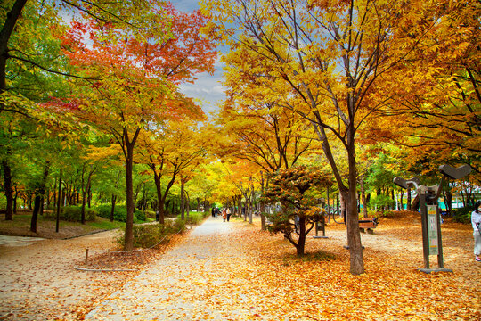
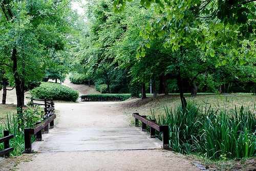
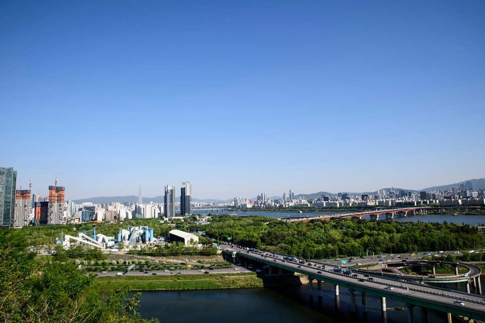
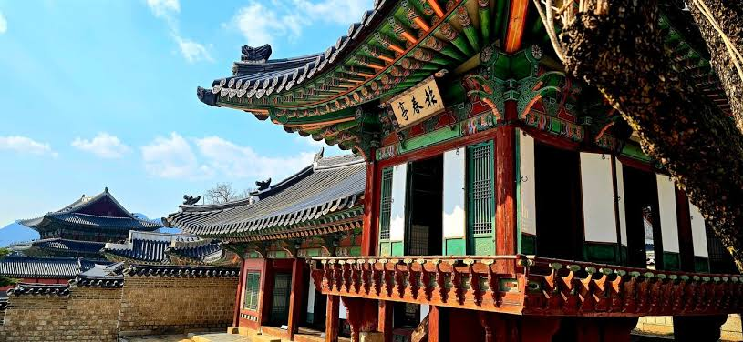
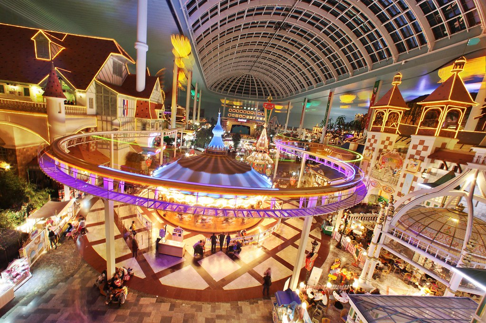
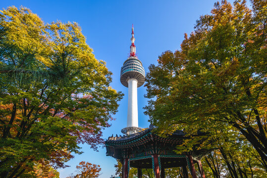
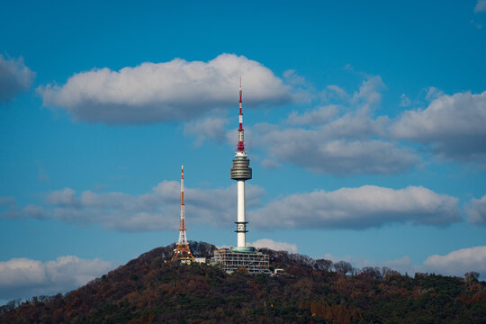
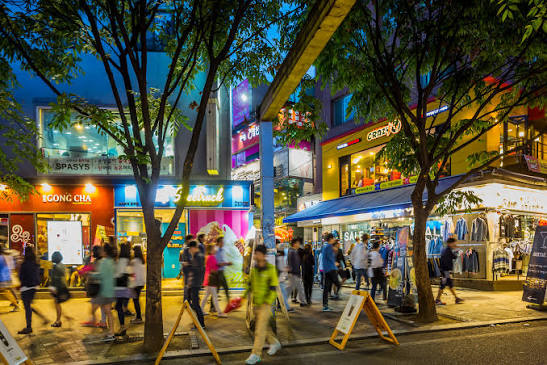

Explore Seoul
Explore Seoul's most popular neighborhoods for food, cafes, shopping, and sightseeing. Most are within about an hour of COEX by public transit.
Gangnam 2 신분당
The densest concentration of restaurants, cafes, and shopping in Seoul, just a short subway ride from COEX. Gangnam Station sits above a large underground shopping center, and the streets above are full of fashion shops, bookstores, and places to eat.
Seongsu and Seoul Forest 2 수인분당




Seoul Forest is a large green space good for walking and relaxing in nature. Nearby Seongsu is the city's current hotspot, where old factories have been turned into stylish cafes, with new pop-up stores and a street of handmade shoe shops.
Royal Palaces 3 5


Gyeongbokgung, Changdeokgung, Changgyeonggung, Deoksugung, and Jongmyo Shrine are all in this area, with Gwanghwamun Gate marking the main entrance. Rent a hanbok nearby and you can walk into the palaces for free.
Bukchon Hanok Village 3


A hillside neighborhood of traditional hanok houses between Gyeongbokgung and Changdeokgung palaces. Best explored on foot, with narrow alleyways opening onto views over the tiled rooftops.
Jamsil 2


Home to Lotte World Tower and Lotte World. The tower has an observatory high above the city along with shopping and restaurants, and nearby Seokchon Lake is a pleasant walk. Songridangil, between Seokchon and Jamsil stations, is lined with restaurants and cafes.
Yongsan and Namsan 1 경의중앙 4 6



Good restaurants and cafes, plus the National Museum of Korea nearby. N Seoul Tower on Namsan offers a panoramic city view and is a short cable car or hike away.
Itaewon and Haebangchon 6
Itaewon is Seoul's most international neighborhood, with restaurants and bars from around the world. Nearby Haebangchon, up the hill by Noksapyeong Station, is a quieter area of cafes and local spots with lovely views over the city.
Yeouido 5 9
Home to The Hyundai Seoul, one of the most talked-about department stores in the city. Great for shopping and dining. The IFC Mall is nearby as well, and Yeouido Park is a pleasant spot for a walk.
Hongdae 2 경의중앙


A lively university neighborhood with lots of street food, bars, and live music. Great for a night out with a young, energetic atmosphere.
Myeongdong and Euljiro 4 2
A popular shopping district known for street food stalls, skincare shops, and a lively atmosphere. Nearby Euljiro, nicknamed Hipjiro, hides trendy cafes and bars among its old printing shops.
Han River Parks
The riverside parks along the Han River are a great place to relax. Locals bring picnic mats and enjoy delivery or takeout food by the water. A short taxi ride is the easiest way to get there.